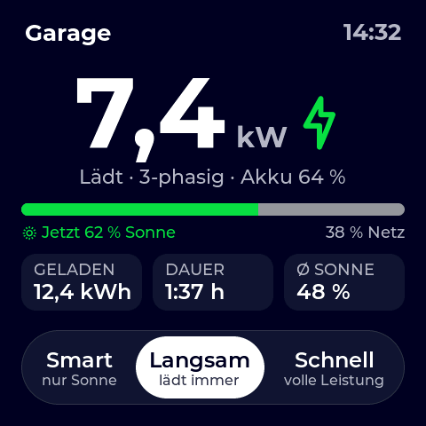
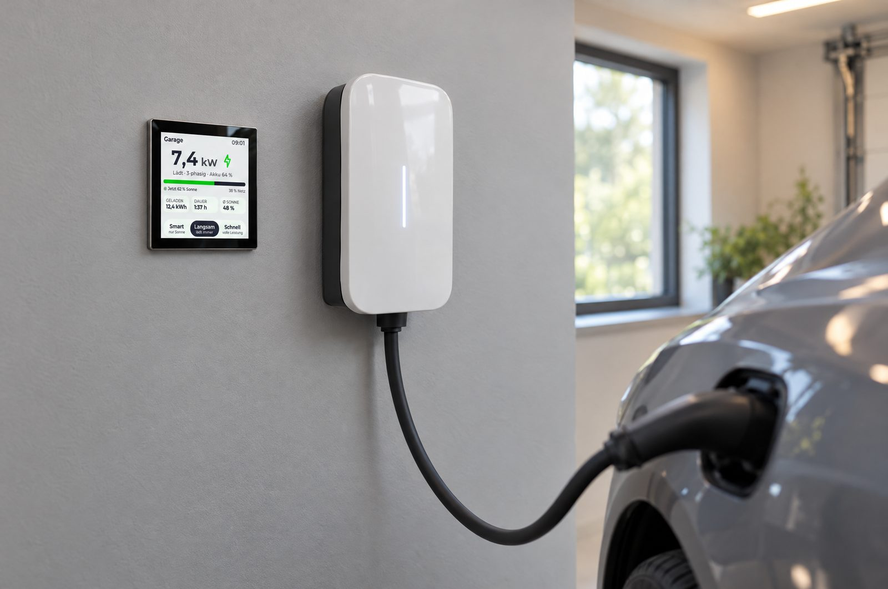
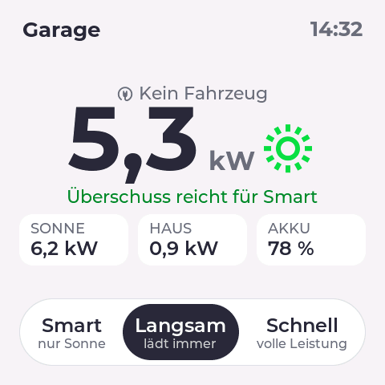

Sonnenanteil auf einen Blick
Ein Balken zeigt live, wie viel der Ladeleistung gerade vom Dach kommt – dazu Energie, Dauer und Ø Sonne der Ladung.
Open Source · für EVCC ab 0.316
Ein 4″-Touch-Display neben dem Ladepunkt: zeigt, wie schnell das Auto lädt und wie viel davon von der Sonne kommt – und schaltet mit einem Tipp zwischen Smart, Langsam und Schnell um. Ohne Handy, ohne App.

Ein Balken zeigt live, wie viel der Ladeleistung gerade vom Dach kommt – dazu Energie, Dauer und Ø Sonne der Ladung.
Große Zahlen, Kontrast ≥ 4,5 : 1, Design wie die EVCC-Oberfläche – hell, dunkel oder automatisch nach Sonnenstand.
Kein Flackern bei WLAN-Last, Updates übers WLAN, Neustart nach Stromausfall. Bildschirm geht aus, wenn niemand lädt.

Drei Tasten
Jede Taste sagt, was sie tut. Im Hintergrund steuert das Display die EVCC-Modi.
Lädt nur mit Sonnenüberschuss – oder zum günstigen Tarif bzw. nach Ladeplan. Ideal, wenn das Auto länger steht.
smart · Immer laden aus
Lädt sofort und ohne Pause mit Mindestleistung, scheint die Sonne, entsprechend mehr. Der Alltagsmodus.
smart · Immer laden an ∞
Volle Leistung, egal woher der Strom kommt – für den Moment, in dem es schnell gehen muss.
now
Ansichten
Installieren
Direkt aus dem Browser – ohne Entwicklungsumgebung. Funktioniert in Chrome und Edge am Computer.
Guition ESP32-4848S040C (ESP32-S3, 4″, 480 × 480) mit einem Datenkabel an den Computer stecken.
Noch kein Display? So eins habe ich bei AliExpress bestellt →Auf „Installieren“ klicken, den seriellen Port wählen (meist „USB Serial“ / CH340) und bestätigen.
Mit dem Handy ins WLAN EVCC-Garage wechseln. Dort Heimnetz, EVCC-Adresse und Ladepunkt eintragen – fertig.

Aktuelle Firmware aus main
„Garage“ oben links 3 Sekunden gedrückt halten – das Einrichtungs-WLAN startet erneut. Dort lassen sich EVCC-Adresse, Ladepunkt, Standort (für Hell/Dunkel nach Sonnenstand), Drehung, Design und die Zeit bis zum Ausschalten des Bildschirms anpassen. Updates kommen danach übers WLAN.